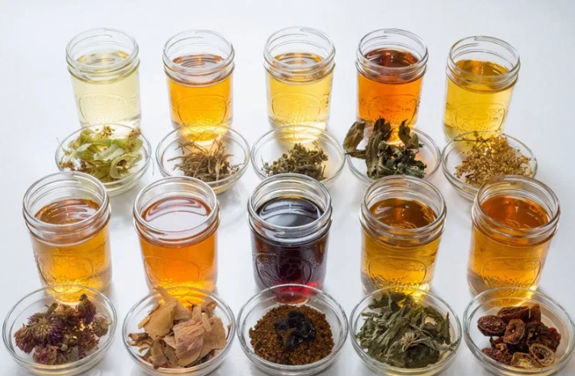
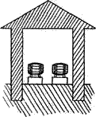
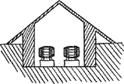

Самогон, водка и настойки. Постройки винного хозяйства.

Мы расскажем о постройках, которые необходимы для винного хозяйства. Однако если у вас уже есть кое-что, то все равно наши советы помогут вам. Вы можете проверить правильность устройства и при желании что-то слегка перестроить и подогнать, опираясь на рекомендации старых виноделов.
Винное хозяйство включает в себя:
а) винодельню;
б) бродильню;
в) подвал;
г) сарай для хранения посуды;
д) бутылочный погреб.
Винодельня – это помещение, в котором сортируют, давят и прессуют виноград. Главным условием хорошей винодельни являются свет и чистота воздуха. В темном помещении, а также в помещении с плохой вентиляцией быстро развиваются плесень, уксусные и другие грибки, которые зарождают в вине разного рода болезни.
В этом помещении пол должен быть деревянный или бетонный, но никак не земляной, так как на нем всегда остаются пыль и грязь.
Бродильня – это помещение, в которое ставятся бочки и чаны с суслом на весь период бурного брожения сусла. Все сказанное о винодельне применимо и к бродильне: свет и чистота воздуха – главные условия.
Бродильня отличается от винодельни тем, что бродильня представляет собой теплое помещение, а винодельня – холодное.
Бродильня должна быть устроена таким образом, чтобы температуру можно было довести до 15–20 °C и при этом поддерживать ее в течение всего бурного процесса брожения.
При постройке бродильни должны быть приняты все меры к устранению возможного скопления в ней угольной кислоты – крайне опасной для здоровья человека. Эта кислота в 1,5 раза тяжелее воздуха, поэтому она собирается сначала внизу, а затем по мере скопления поднимается вверх. Поэтому, независимо от имеющихся обыкновенных вытяжных труб, устраивают еще в стенах, у самого пола, небольшие отверстия, через которые и вытекает тяжелый газ по мере его образования.
Подвал
Хороший подвал должен иметь постоянно одинаковую температуру, притом не слишком высокую и не слишком низкую – от 8 до 12 °C. При низкой температуре вино очень долго не спеет, при слишком высокой оно приобретает склонность к заболеванию. Кроме того, подвал не должен быть слишком сухим или сырым. В сухом подвале вино сильно испаряется, а в сыром – заводится плесень. Потери вина в сухом погребе доходят до 1 %, между тем как в хорошо устроенном они не превышают 0,4–0,5 % в год. Сверхсухой погреб требует лишней работы, более частой доливки вина. Как известно, воздух является плохим проводником теплоты, следовательно, при постройке надземных подвалов необходимо оставлять пространство между стеной и материком и засыпать его золой, каменноугольным мусором, прокладывать стекловатой либо любым другим подобным материалом, не препятствующим свободному доступу воздуха. Но, само собой разумеется, должны быть приняты меры, чтобы ни дождь, ни проточная вода не проникали в рыхлый слой.
Надземные подвалы строятся с двойными стенами, пространство между стенами закладывают соломой, опилками или угольным мусором. Фундамент – также в две стены с засыпкой промежутка золой или другим плохим проводником тепла.
Для лучшей изоляции внутреннего помещения подвала от влияния внешней температуры делают небольшую пристройку перед входом. Ее располагают таким образом, чтобы перед погребной дверью стояла сплошная стена, а наружная дверь постройки была бы сбоку. При таком расположении дверных отверстий вход в подвал окажется защищенным сплошной стеной переднего помещения. Ни в коем случае не следует обращать вход в погреб ни на юг, ни в сторону господствующих ветров. Если вход расположен на юг, то при таком положении трудно сохранить в погребе постоянную температуру. Во втором случае вино может помутиться при сильных порывах ветра. Многие профессиональные виноделы советуют обсадить погреб деревьями, это достаточно сильно содействует сохранению в подвале низкой и постоянной температуры воздуха. По этому поводу производились исследования. Разница между средней годовой температурой защищенной земли и незащищенной от влияния солнечных лучей составляет 9—10,5 °C.
Погреба строятся различных конструкций. Они могут быть как надземные, так и подземные (рис. 2 и 3).
Подземные погреба лучше надземных, так как лучше противостоят влиянию внешней температуры воздуха. В горных местностях строят погреба в виде тоннеля, углубляясь в гору в горизонтальном направлении. Температура в таких постройках обычно постоянная, что немаловажно для приготовления и хранения вина.


Рис. 2. Надземный погребРис. 3. Погреб, углубленный в землю
Вентиляция подвала
Простой и вместе с тем достигающий хороших результатов способ вентилирования состоит в несложном приспособлении. Приблизительно на 40 см от поверхности земли в стене, обращенной на север, пробивают отверстие 60 см в длину и 30 см в ширину. Такие отверстия проделывают через каждые 4 м и снабжают их застекленными, открывающимися рамами. В противоположной стене устраивают воздушные ходы, подобно дымовым ходам в печах, которые сделаны в стене на 1 м ниже крыши.
Вентиляция, устроенная таким образом, обновляет воздух в помещении в течение нескольких часов.
Особое внимание должно быть обращено на устройство хорошей вентиляции, так как большая часть болезней вина происходит от отсутствия или недостаточности циркуляции воздуха.
Устранение плесени из подвала. Виноделы-профессионалы говорят, что просто стиранием со стены и побелкой плесень не может быть достаточно хорошо удалена, поскольку находится не только на поверхности стены, но и скапливается в щелях и во всех неровностях. Поэтому стены следует тщательно опрыскивать, особенно все трещины и углубления. Для опрыскивания следует взять двойную сернистокислую известь, и только после такой обработки стены рекомендуется белить.
Двойную сернистокислую известь можно приготовить и самим. Это делается следующим образом. В бочонок, приблизительно на 10 ведер, наливают 1 ведро воды, а затем помещают 6 полных (можно с горкой) столовых ложек негашеной извести, предварительно растворенных небольшим количеством воды. После этого серой подкуривают бочку до тех пор, пока серник в ней не перестанет гореть. До и после подкуривания бочку катают. Приблизительно через несколько часов вновь подкуривают таким же образом и опять катают. Повторяют от 6 до 8 раз, пока, наконец, в бочке не появится сильный серный запах. В этом случае жидкость готова и может быть немедленно употреблена в дело.